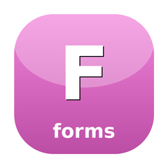

SugarForms
Interactive forms + foundation form primitives

Form engine built on SugarCraft — multi-page Group wizards, seven themes, per-field validators, conditional hide predicates. The form is itself a Model — drop it into a Program. Also the foundation for the raw form / input primitives that sugar-widgets re-exports, folded together with the interactive form library into a single standalone dependency.
Install
composer require sugarcraft/sugar-formsUntil a 1.0 tag exists the package publishes only dev-master, so a consumer's own composer.json needs "minimum-stability": "dev" with "prefer-stable": true (Composer's documented default refuses a dev-only package at plain stable).
Quickstart
use SugarCraft\Forms\Form;
use SugarCraft\Core\Program;
use SugarCraft\Forms\Field\{Input, Confirm, Select, Note};
use SugarCraft\Forms\Validator\{Required, Email, MinLength};
use SugarCraft\Fuzzy\Matcher\SmithWatermanMatcher;
$form = Form::new(
Note::new('welcome')
->withTitle('Onboarding')
->withDescription('A few quick questions.'),
Input::new('name')
->withTitle('Your name?')
->withPlaceholder('Ada Lovelace')
->withValidator(new Required())
->withValidator(new MinLength(2)),
Input::new('email')
->withTitle('Email address')
->withPlaceholder('you@example.com')
->withValidator(new Required())
->withValidator(new Email()),
Select::new('lang')
->withTitle('Favorite language?')
->withOptions('PHP', 'Go', 'Rust', 'Python')
->withFuzzySuggestions(['PHP', 'Go', 'Rust', 'Python', 'JavaScript', 'TypeScript']),
);
// $form is a SugarCraft Model — drive it with a Program. The Model is
// immutable: Program drives a COPY and run() returns the final model, so
// capture it before reading values back.
$final = (new Program($form))->run();
$done = $final instanceof Form ? $final : throw new RuntimeException('not a Form');
if ($done->isSubmitted()) {
echo $done->values()['name'], "\n";
}
// Async suggestions:
$form = Form::new(
Input::new('repo')
->withTitle('Repository')
->withAsyncSuggestions(fn($q) => fetchRepos($q), 150),
);
// Fuzzy scoring — sugar-fuzzy, the engine behind withFuzzySuggestions():
$matcher = SmithWatermanMatcher::new();
$score = $matcher->score('js', 'JavaScript'); // 3
$best = $matcher->matchAll('py', ['Python', 'PHP', 'Ruby'])[0]; // MatchResult: Python, score 11What's in the box
Form honors Field::isHidden() in values, errors, validation, navigation, submit and view; focus never rests on a hidden field and fully hidden groups are skipped. A Group::withHideFunc() predicate sees the same view values() returns — the visible fields of every visible earlier group.charLimit budget; TextArea counts newlines against it, while TextInput strips them at insert — a single-line field cannot represent them. TextArea pans to keep the cursor row visible.->withValidator(Validator | \Closure) — a closure returns null to pass or an error string to block submit; Input chains multiple attachments in order. The predicate form ->withValidation(callable $predicate, string $errorMessage) (Input and Text) takes a boolean instead: true passes. These contracts are not interchangeable — a hypothetical withValidate that returned null/error string renamed to withValidation would INVERT the return semantics (null/string vs bool). Five built-in validators: Required, Email, MinLength, MaxLength, Pattern. Cross-field validation via Form::validateAll(): array<string,string> after submit. Enable error summary with Form::withErrorSummary(true) to show all errors at once.->withFuzzySuggestions([...]) on Input and Select — Smith-Waterman scoring ranks candidates by match quality (extracted to sugar-fuzzy). Use sugar-fuzzy’s SmithWatermanMatcher directly for programmatic scoring: $matcher->score($query, $candidate).->withAsyncSuggestions(callable $fetcher, int $debounceMs = 150, ?WorkerPool $workerPool = null, ?float $fetchTimeoutSeconds = null) on Input and Select — fetches suggestions asynchronously with a configurable debounce delay. The two optional knobs are tuning surfaces: leave them null unless you know why — $fetchTimeoutSeconds races each in-flight fetch against a wall-clock ceiling (a breach surfaces as the fetcher failing); $workerPool is reserved (stored, never consulted). The SugarCraft\Forms\FormSuggestionsReadyMsg envelope (carrying the fetch generation — superseded or unfocused arrivals are discarded, SF-52) is dispatched via the event loop when results are available.->withAsyncValidator(Closure): PromiseInterface<?string> on the async-capable fields (Input, Text). Enter runs the sync gate; when async validators are still answering, the form parks the submit in a pending round, verdicts paint inline and in the summary, a clean round fires the deferred submit, and any edit clears the overlay. Field-level verdicts judge the bytes dispatched, not the bytes live when they land: direct validateAsync() callers must discard a resolution whose value changed mid-flight.j / k navigate, Space toggles selection — mirrors vim-style keybindings.Select::withEnum(\BackedEnum::class) coerces the selected value to the given enum type automatically.Group::new(Field ...$fields) stacks fields into one page; a multi-page wizard is built with Form::groups(Group ...$groups). Conditional ->withHideFunc(?\Closure) HIDES the whole group — it drops out of the focus walk and its values are excluded — there is no skip function.Form::view() threads the theme into every field body (titles, cursor surface, options, inline errors). Summary block and per-field bullet ride the Theme->errorSummary / Theme->errorSummaryItem slot pair.$form->values() or typed accessors string() / int() / bool() / array() / get(string $key, mixed $default = null) once the Program ends — no submit-hook callback API exists.Form::withKeyMap(?KeyMap) rebinds Next / Prev / Submit / Abort per form.ActionSpinner) with a bounded runtime ceiling — the long-running spin primitive folded in from the retired prompt façade.Accessible mode. Form::withAccessible() flips the form to plain-text rendering — useful when you detect NO_COLOR=1 or TERM=dumb. The accessible line is scoped to the focused field only: no group titles, no Step X of Y pagination, no error-summary block.
Security & trust boundary. Form content is frequently model- or network-produced, so every display surface runs hostile bytes through RenderSafe::clean(): C0/DEL bytes are stripped (TAB and LF survive) and every ESC-introduced sequence is disarmed except true SGR, so theme color renders while screen clears, cursor moves and OSC payloads become inert text; the sweep is idempotent and UTF-8 safe. The boundary is the display, never the buffer — value() returns pasted bytes verbatim, and dev-authored placeholders render raw.
Use it for
- Declarative form wizards — multi-page Groups, validation, themes, fuzzy / async suggestions, out of the box.
- Standalone form primitives — when you want the raw inputs without sugar-widgets overhead.
- Custom form engines — build your own form system on top of the Field interface.
- Spinner and progress components — standalone spinner and the fork-safe ActionSpinner live here, previously in sugar-widgets / the retired prompt façade.
Source & demos
- Source on GitHub
- Full README
- Runnable examples
- Originally inspired by huh (Go); SugarCraft is developed as a native PHP project.
API reference
| Class | Method | Description |
|---|---|---|
| Form | new(Field ...$fields) | Create a single-group form with fields |
| Form | groups(Group ...$groups) | Create a multi-page form |
| Form | values() / string() / int() / bool() / array() | Submitted values of visible, non-skippable fields — hidden fields, hidden groups and skippable Note fields are excluded (legacy getString() & friends remain as deprecated forwarders, to be removed in 2.0.0) |
| Form | get(key, default = null) | Value of one field, or the fallback when the key is absent |
| Form | validateAll() | Run all field validators, return [fieldKey => errorMessage] |
| Form | withErrorSummary(bool) | Show all errors at once on submit failure |
| Form | withKeyMap(?KeyMap) | Rebind Next / Prev / Submit / Abort per form |
| Group | new(Field ...$fields) / withHideFunc(?\Closure(array): bool) | A page of fields; the predicate receives the visible values collected before this group |
| Field\Input | new(string) | Create a text input field |
| Field\Input | withFuzzySuggestions(list) | Filter suggestions by fuzzy match score |
| Field\Input | withAsyncSuggestions(callable, int = 150, ?WorkerPool = null, ?float = null) | Async suggestions with debounce |
| Field\Input | withAsyncValidator(Closure): PromiseInterface<?string> | Async validation blocks submit until it answers |
| Field\Confirm | new(string) | Create a confirmation field |
| Field\Select | new(string)->withOptions(string ...) | Create a select field |
| Field\Select | withFuzzySuggestions(list) | Filter options by fuzzy match score |
| Field\Select | withAsyncSuggestions(callable, int = 150, ?WorkerPool = null, ?float = null) | Async suggestions with debounce |
| Field\Select | withEnum(BackedEnum::class) | Coerce selected value to enum type |
| Field\MultiSelect | new(key, ...options) | Create multi-select field (j/k nav, Space toggle) |
| Field\Note | new(key) | Create note field — text set via withTitle/withDescription; plain notes never appear in values() (a withNext(true) note contributes a null entry) |
| Validator\Required | validate(string): true|string | true to pass, or the error string when the value is empty |
| Validator\Email | validate(string): true|string | true to pass, or the error string when the value is not a valid email |
| Spinner\Spinner | new(?Style) | Create a spinner with style |
| ActionSpinner | new() / run() | Fork-isolated spinner action with a bounded runtime ceiling; the verdict arrives as a SpinnerResult |
| Fuzzy\FuzzyMatcher (deprecated shim) | score(query, candidate) | Smith-Waterman alignment score (int) — delegates to sugar-fuzzy |
| Fuzzy\FuzzyMatcher (deprecated shim) | match(query, candidates): list<[string, int]> | Legacy ranking shape — for ?MatchResult / matchAll() use sugar-fuzzy's SmithWatermanMatcher directly |
| Theme | errorSummary | Renderable slot for custom error summary display |
Configuration
Each option is set through a fluent builder method on Form, TextInput or an async-capable field. The defaults are the values the classes ship with.
Form::withAccessible(bool): bool, defaultfalse. Switches to the single-line plain-text view of the focused field.Form::withShowHelp(bool): bool, defaulttrue. Shows the key-help line under the form.Form::withShowErrors(bool): bool, defaulttrue. Paints each field's inline error.Form::withErrorSummary(bool): bool, defaultfalse. Lists every validation error at once after a failed submit.Form::withTheme(Theme):Theme, defaultTheme::ansi(). Sets the palette every field is painted with.Form::withKeyMap(?KeyMap):?KeyMap, defaultnull, which usesKeyMap::new(). Rebinds Next, Prev, Submit and Abort.TextInput::charLimit(int): int, default4096. Bounds a paste or insert to this many characters.0turns the bound off.withAsyncSuggestions(callable, int $debounceMs): int, default150. Milliseconds to wait after the last keystroke before a suggestion fetch starts.withAsyncSuggestions(..., ?float $fetchTimeoutSeconds): ?float, defaultnull. Wall-clock ceiling per fetch.nulladds no timeout.
Keys
The default KeyMap::new() binds the following keys.
- Next:
Tab,↓ - Prev:
Shift+Tab,Alt+Tab,↑ - Submit:
Enter - Abort:
Esc,Ctrl+C
MultiSelect adds j and k for cursor movement and Space to toggle an option. KeyMap::withNext(), withPrev(), withSubmit() and withAbort() each replace one binding list, and Form::withKeyMap() installs the result. Passing null restores the defaults.
Theming
Seven presets are available as static factories on Theme: ansi() (the default), plain(), charm(), dracula(), catppuccin(), base16() and base(). Theme::catalog() returns their names. Apply one with Form::withTheme():
use SugarCraft\Forms\Form;
use SugarCraft\Forms\Field\Input;
use SugarCraft\Forms\Theme;
$form = Form::new(Input::new('name')->withTitle('Your name?'))
->withTheme(Theme::dracula());Examples
Each file in examples/ runs from the library root as php examples/<name>.php.
burger.php: The canonical burger order form from the huh README, built from three fields. Renders the first frame.confirm.php: The Confirm field in three states: default-no, default-yes and custom labels.form.php: A static render of one form made of an Input, a Select and a Confirm.hide.php: Conditional visibility throughwithHideFunc().input.php: The Input field with a title, description and placeholder.multi-page-form.php: A multi-page form with conditional show and hide.multi-select.php: The MultiSelect field with min and max bounds.no-color.php: How a program readsNO_COLORandCLICOLORthrough sugar-core and renders to match.select.php: The single-choice Select field.spinner.php: A blockingActionSpinnerthat runs a worker callable while it spins on STDERR.text.php: The multi-line Text field.themes.php: The same form rendered under five built-in themes.
Testing
cd sugar-forms
composer install
vendor/bin/phpunitThe suite boots through tests/bootstrap.php, which calls SugarCraft\Testing\LoopPin::pinStableClock() before any test touches the event loop, because the async-suggestion tests arm debounce and timeout timers on it. sugar-testing is a require-dev dependency, and tests/GoldenRenderTest.php uses its golden-file helpers.
Upstream mapping
The engine ports charmbracelet/huh, and the primitives port charmbracelet/bubbles. Most class docblocks cite the upstream method they mirror, written as Mirrors charmbracelet/....
Form(withwithTheme,withAccessible,withErrorSummary):huh.FormwithWithTheme,WithAccessible,WithErrorSummaryGroup:huh.GroupTheme:huh.ThemeField\Note:huh.NoteSpinner\SpinnerandSpinner\TickMsg:bubblesspinnerTextArea\TextArea:bubblestextareaViewport\Viewport:bubblesviewportCursor\Cursor:bubblescursor
Troubleshooting
values() has no entry for a field
A field is left out of values() when it, or the group it sits in, is hidden through withHideFunc(), and when it is a plain Note, which never contributes a value. A Note built with withNext(true) adds a null entry instead. get() returns its fallback for an absent key, so a default there can hide the omission. Check the field's visibility before reading the key.
A boolean predicate goes to withValidator()
withValidator() takes a closure that returns null to pass or an error string to block. A closure that returns true or false is not read as a predicate: its return value goes into the field's error slot, which holds only a string or null, so the validation pass that runs it throws a TypeError. For a true/false predicate use withValidation() on Input or Text, which passes on true.
Pasted text is cut short, or newlines disappear
TextInput clips a paste or insert to the remaining charLimit budget, which defaults to 4096 characters. It also strips CR and LF at insert, because a single-line field cannot hold them. Raise the limit with charLimit(), or pass 0 to turn the bound off. For multi-line input use Text, which wraps a TextArea and counts newlines against its own budget. That budget defaults to 65536 characters, not 4096. charLimit() on Text changes it, and passing 0 turns it off.
Suggestions never arrive, or a fetch fails after a timeout
A fetch that breaches $fetchTimeoutSeconds surfaces as the fetcher failing. Results that arrive after a newer keystroke or after the field loses focus are discarded by design (the generation check from SF-52), so a slow fetch can look like no fetch at all. A zero, negative or non-finite timeout throws \InvalidArgumentException when the field is built, and so does a negative debounce. Leave $workerPool null: it is stored but never consulted.
NO_COLOR or TERM=dumb still gets colored output
The form does not read the environment itself. Turn accessible mode on from your own check, for example withAccessible(getenv('NO_COLOR') !== false || getenv('TERM') === 'dumb'). Accessible mode is a single-line plain-text view of the focused field, so the group titles and error summary disappear with the colors.
Values read as empty after the program ends
Form is immutable, and the run() method of sugar-core's Program drives a copy and returns the final model. The $form you built before the run never holds the submitted values. Capture the return value and read it, and check isSubmitted() first, because an aborted form returns too.
Changelog and versioning
The package has no separate changelog file and no release tag yet, so it publishes only dev-master. Its history is the commit log of sugar-forms/ in the monorepo, which the split mirror on GitHub records. The API table above marks the deprecated accessors on Form and the Fuzzy\FuzzyMatcher shim. Every deprecation whose docblock reads REMOVED-IN: 2.0.0 retires in 2.0.0. That covers the getString(), getInt(), getBool(), getArray() and getFocusedField() accessors on Form, the getDescription() and getError() accessors on Field and its subclasses, the getWidth() and getHeight() accessors on Viewport, and the legacy setters and accessors on TextArea, TextInput, ItemList and FilePicker. The Fuzzy\FuzzyMatcher shim, which delegates to sugar-fuzzy, has no removal version yet, so do not plan its removal for 2.0.0.
Demos.
VHS-recorded GIFs — eight tapes covering the library's examples; the burger, hide and spinner demos ship without a recording. Regenerated automatically on every push that touches the source.

Form
Static frame of a full form — Input, Select and Confirm.
Input
Single-line text with validation.
Confirm
Y/N boolean.
Select
Single-choice list.
MultiSelect
Toggle multiple options.
Text
Multi-line text input.
Themes
Five of the seven themes side-by-side — base, charm, dracula, base16 and catppuccin; ansi and plain are omitted from the recording.